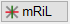
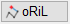
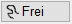

")
·Alternativer Aufruf: mittlere Maustaste auf eine Linie.
·Folienbelegung: Wenn AutFol aktiviert ist, werden Linien in der Folie 0 abgelegt.
Konstruieren und Bearbeiten geradliniger Elemente.
Funktionen |
Beschreibung |
|---|---|
Linie zeichnen. |
|
Parallele Linie erzeugen. |
|
Linie parallel verschieben. |
|
Linie verlängern oder kürzen. |
|
Schnittpunkte bilden. |
|
Linienanfangs- oder Endpunkt mit einem anderen Linienpunkt verbinden. |
|
Linie verschieben. |
|
Linie duplizieren. |
|
Elemente ausrunden. |
|
Teilbereich einer Linie bearbeiten. |
|
n-fache Teillinie bearbeiten. |
|
Teillinie abschnittsweise bearbeiten. |
|
Vieleck zeichnen. |
|
Linien ändern (Stiftnummer, Strichtyp); So wie-Funktion. |
|
Teillinien oder Kreisbögen innerhalb eines Bereiches löschen. |
|
Linien löschen. |
Optionen |
Beschreibung |
|---|---|
|
Linienauswahl. |
|
so wie-Funktion: Auswahl der Linien- und Stifteinstellungen entsprechend eines bestimmten Elementes. Abfrage: Sowie welche Linie? » Format übertragen |
|
Stiftauswahl. Falls Stifte als Favoriten aktiviert wurden, werden diese an erster/oberster Stelle angezeigt. |
|
Ein- und Ausschalten des Differenzmodus. Der aktuelle Modus ist durch die aktive Schaltfläche gekennzeichnet. |
|
Wechseln zwischen Zeichenmarke bewegen und Zeichnen. Der aktuelle Modus ist durch die aktive Schaltfläche gekennzeichnet. |
   |
Zeichenmodus: mit Richtungslogik | ohne Richtungslogik | Freihand-Zeichnen |